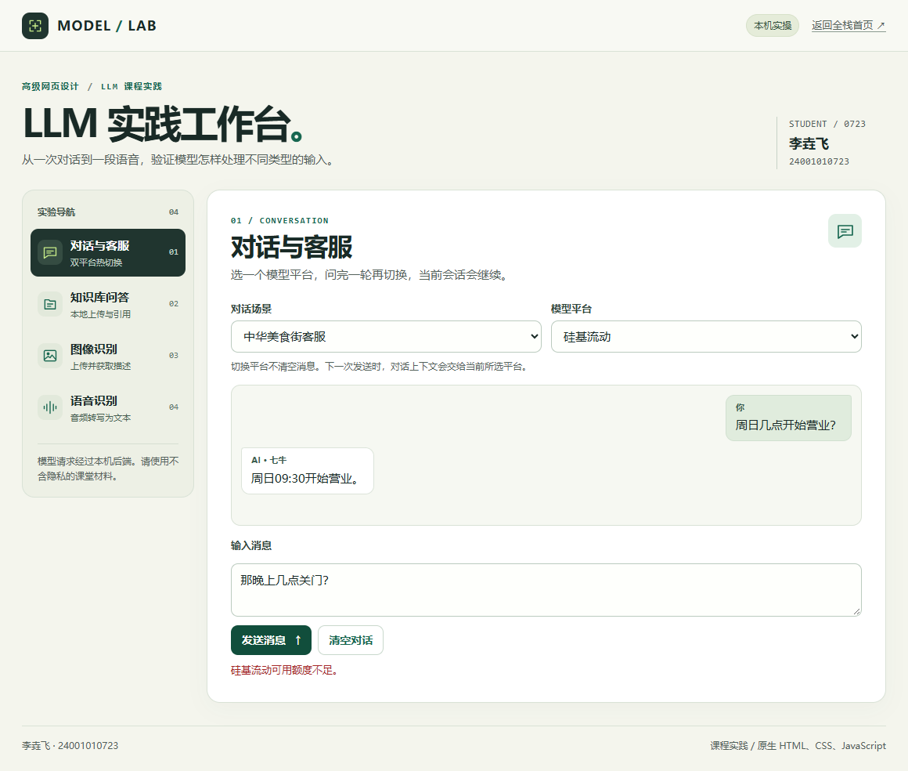
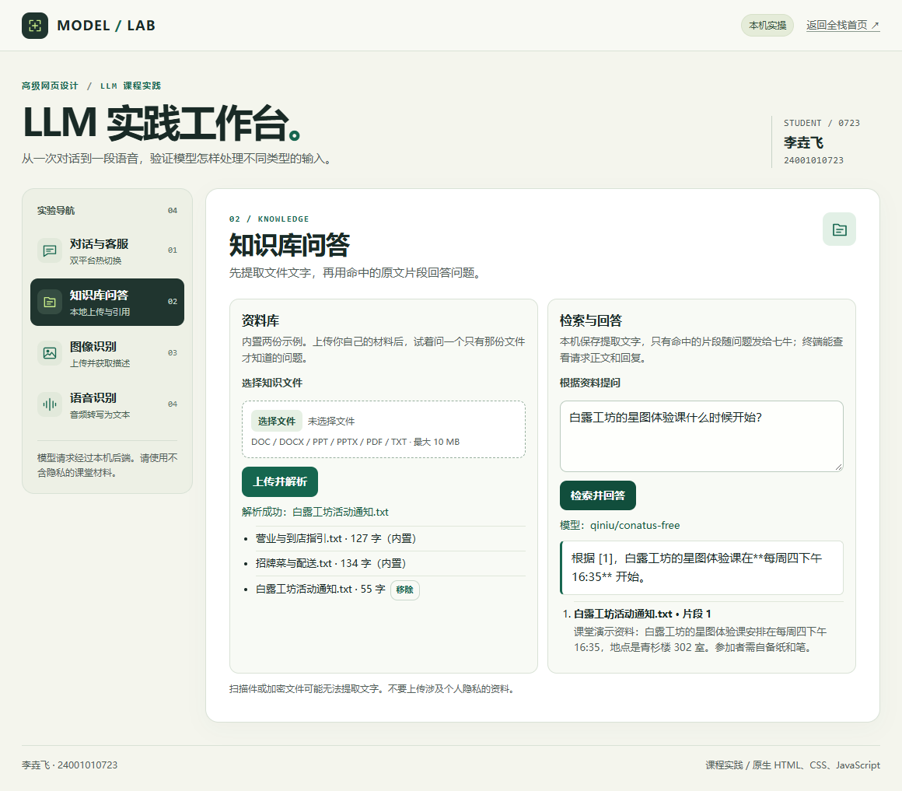
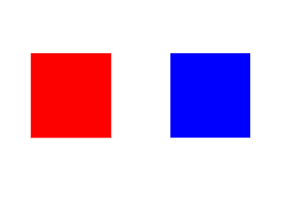
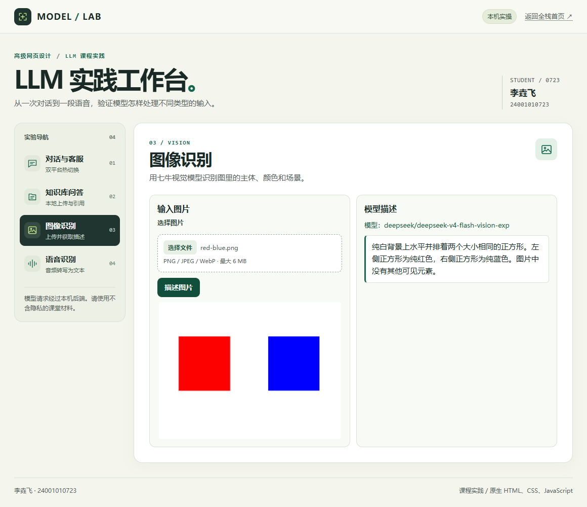
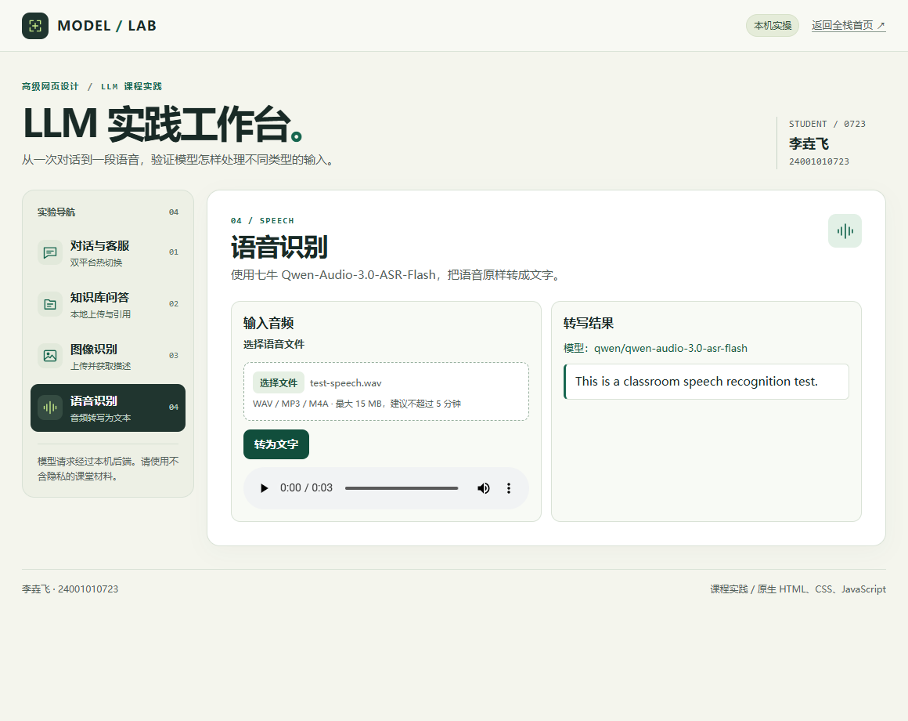

TRACE 01
双平台切换实测
同一会话先用七牛问营业时间，再切到硅基流动追问闭店时间。本次已实际发出切换后的请求，但硅基流动余额不足，待恢复额度后补测成功回复。
1 · 七牛
问：周日几点开始营业？
答：周日09:30开始营业。
qiniu/conatus-free
2 · 硅基流动
问：那晚上几点关门？
答：未生成回答：硅基流动账户余额不足（HTTP 402 / 30001）
deepseek-ai/DeepSeek-V4-Flash
查看实操截图

高级网页设计 / 课程实践
两家平台在同一个客服会话中切换，并记录文件问答、看图和语音转写的实际输入与模型结果。
李垚飞 · 24001010723
同一会话先用七牛问营业时间，再切到硅基流动追问闭店时间。本次已实际发出切换后的请求，但硅基流动余额不足，待恢复额度后补测成功回复。
问：周日几点开始营业？
答：周日09:30开始营业。
qiniu/conatus-free
问：那晚上几点关门？
答：未生成回答：硅基流动账户余额不足（HTTP 402 / 30001）
deepseek-ai/DeepSeek-V4-Flash

文件上传并解析之后，检索命中的文本随问题发送给模型。
问：白露工坊的星图体验课什么时候开始？
答：根据 [1]，白露工坊的星图体验课在**每周四下午 16:35** 开始。
命中原文：课堂演示资料：白露工坊的星图体验课安排在每周四下午 16:35，地点是青杉楼 302 室。参加者需自备纸和笔。
qiniu/conatus-free

用一张自制双色图验证模型能识别画面中的位置和颜色。

纯白背景上水平并排着两个大小相同的正方形。左侧正方形为纯红色，右侧正方形为纯蓝色。图片中没有其他可见元素。
deepseek/deepseek-v4-flash-vision-exp

播放用于课堂测试的合成语音，对照指定模型的转写结果。
This is a classroom speech recognition test.
qwen/qwen-audio-3.0-asr-flash

这是一份可在线查看的留痕，不是在线模型服务。操作由 Codex 协助在本机课堂项目实测；原始配置、密钥和个人文件未公开。现场演示请使用本机工作台。